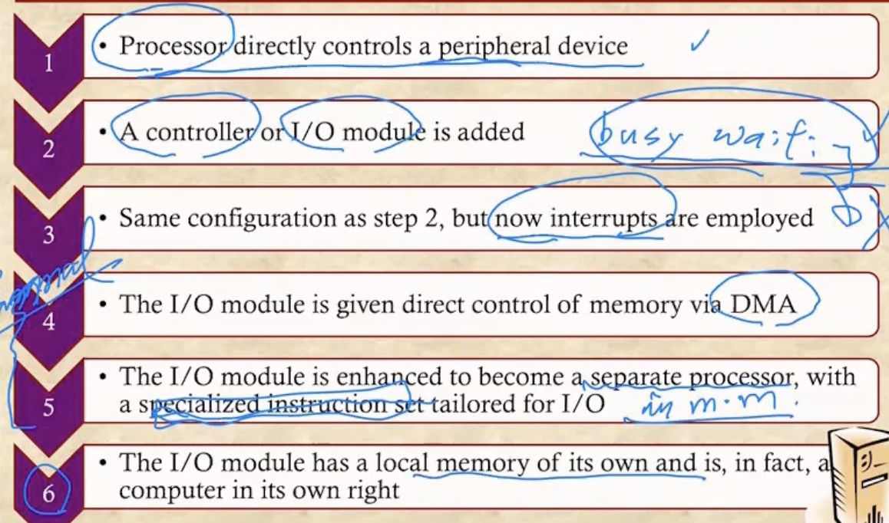

충남대학교 컴퓨터공학과 류재철 교수님의 "운영체제 및 실습" 강의를 필기한 내용입니다.
다소 잘못된 내용과 구어적 표현 이 포함되어 있을 수 있습니다.
IO Device
- Human Reachable : 키보드나 모니터, 마우스같은거
- Machine Reachable : USB, 센서같은거
- Communication : 통신을 위한 장비
- IO장비는 하드웨어면으로나 소프트웨어 면으로나 장비마다 다양하기 때문에 이쪽을 개발하는 것은 전문성을 요구하는 쉽지 않은 일이다
IO Techniques
구분

- 보면
- Programmed IO는 IO 처리를 구현한 프로그램이 있어서 프로세서가 직접 이 프로세스를 실행시키며 디스크에서 파일을 읽어오는 것을 의미한다
- Interrupt-Driven IO는 블락이 먹기 전까지 실행하다 IO가 필요해져서 블락을 먹으면 다른 프로세스를 실행하고 IO가 완료되면 인터럽트를 걸어서 다시 복귀하는 형태를 의미한다
- Direct Memory Access는 Interrupt Driven IO의 진화버전으로써 프로세서가 아닌 IO처리 담당 프로세서가 별도로 존재해서 걔가 IO를 처리하고 끝나면 인터럽트를 거는 일을 의미한다
- Programmed IO와 나머지 둘의 가장 큰 차이점은 Busy Waiting이다 - Programmed IO는 프로세서가 직접 IO처리 프로세스를 실행시키며 IO처리를 해 기존의 프로세스가 기다리는 와중에도 프로세서를 사용하지만 Interrupt-Driven IO나 Direct Memory Access 는 IO처리를 프로세서가 직접 하지 않아 프로세서는 다른 프로세스를 돌릴 수 있게 한다
발전과정

- Programmed IO형태에서
- IO 전용의 IO module / Controller가 등장한다
- IO module / Controller는 한가지 형태의 IO를 전담하는 것이라고 생각하면 된다
- 하지만 Interrupt 기능은 없어서 CPU가 수시로 IO가 종료되었는지 확인해줘야 되는 Busy Waiting이 여전히 존재했기 때문에 IO Interrupt가 추가된다 - 얘가 추가되고 나서는 Busy Waiting을 하지 않음
- IO module / Controller가 하드와 메모리를 직접적으로 제어하는 DMA가 추가됨
- DMA가 IO와 관련된 모든 일을 전담하는 것으로 생각하면 될거같다
- IO Module / Controller들을 DMA가 관리하게 되는 것
- CPU가 DMA에게 IO를 맡기기만 하면 얘가 알아서 다 처리하는 형태
- IO module / Controller가 별도의 프로세서로 분리됨 - IO만을 위한 특별한 Instruction을 실행시키며 IO를 처리한다
- 4, 5번에서 하드와 메모리를 직접적으로 제어하는 프로세서를 별도로 분리한 것을 IO Channel이라고도 표현한다
- 이전까지는 DMA도 메인메모리를 공유했지만 이제는 DMA전용의 메모리가 별도로 분리되어서 더 빠르게 작동할 수 있게 됐다

- 옛날에는 데이터를 주고받는 Bus가 하나여서 여기에 DMA나 IO Module / Controller들이 전부 연결되어있었지만 - Single Bus, Detached DMA
- bus에는 DMA만 붙고 그 아래 IO Module / Controller들이 있는 형태로 바뀌었다가 - Single Bus, Integrated DMA
- 이제는 System bus에는 DMA하나만 붙고 그 아래 IO Bus가 별도로 존재해 IO Module / Controller가 사용하는 Bus가 별도로 분리되게 된다
IO 설계
- Efficiency : IO들은 프로세서나 메모리보다 처리속도가 더 늦기 때문에 이런 처리속도가 느린 IO 하드웨어들을 어떻게 효율적으로 관리하는가
- Generality : IO의 인터페이스가 다 제각각이어서 그것을 이용하려는 프로그래머가 IO에 따라 다른 방법을 사용해야한다면 매우 불편 - IO의 사용법(인터페이스)을 통일시켜서 간편하게 사용할 수 있게끔 하는 것

- 위 그림은 세 IO를 예시로 든건데
- 보면 맨 아래 3개가 하드웨어로 구현된 IO 이다
- 그리고 그 위에가 OS 레벨 이며 맨 위의 user process에서는 OS가 제공해주는 API들을 이용해 사용자가 프로그램을 짜게 되는 것
- 우선 Logical Peripheral Device를 보면
- Logical IO에서 open, read, write, close등의 API등을 사용자에게 제공한다
- 그리고 이런 API를 사용해 명령을 내리면 Logical IO에서 그것을 처리해 표준화된 인터페이스를 제공하는 Device IO로 전달하게 된다
- Device IO가 이런 표준화된 인터페이스를 제공하기 때문에 우리는 HW레벨의 지식 없이 간편하게 HW를 제어할 수 있는 것이다
- Communication Port에서도 동일하게 Communication Architecture을 이용해 사용자에게 API를 제공하고, 그것을 처리해 Device IO로 넘겨주게 된다
- File System에서는
- 일단 Directory Management는 우리가 문자열 형태로 전달한 파일의 경로를 File Descriptor로 바꾸는 역할을 한다
- File Descriptor 별거 아니다 - 프로세스는 고유한 pid를 갖고있듯이 파일도 File Descriptor 라는 고유한 번호를 갖게 된다
- 그리고 File System에서 파일에 대한 Open, Read, Write, Close 명령어를 제공해준다
- 그리고 Physical Organization에서는 Virtual Address를 Physical Address로 변환하는 등의 일을 하게 된다
- 일단 Directory Management는 우리가 문자열 형태로 전달한 파일의 경로를 File Descriptor로 바꾸는 역할을 한다
Buffering
Data IO size
- 일단 Device는 IO로 갖고오는 데이터의 크기에 따라 두가지로 나눌 수 있다
- Block Oriented Device - 얘는 블럭(IO에서는 페이지를 블럭이라고 표현한다)단위로 IO를 처리하는 Device를 말한다
- 보통 Machine Reachable Device가 블럭단위로 IO처리하므로 이놈이 여기에 들어간다
- Stream Oriented Device - 예는 바이트나 워드 단위로 IO를 처리하는 Device를 의미한다
- 보통 Human Reachable Device가 바이트나 워드 단위로 IO를 처리하므로 이놈이 여기에 들어간다
- 따라서 Block Oriented Device가 블럭단위로 갖고오므로 Stream Oriented Device보다 갖고오는 양이 많다
Buffer

- 일단 Buffer라는 것은 IO를 통해 가져온 데이터를 메인메모리의 OS파트에 잠깐 저장하기 위한 용도로의 공간을 의미한다.
- 버퍼라는게 존재하지 않을 때 어떤일이 벌어지는지 보자
- 유져 프로세스가 page fault가 일어나서 OS에게 특정 페이지를 요청했다고 해보자
- 그럼 OS는 IO에게 해당 페이지를 가져오라고 시킨 뒤 다른 프로세스를 실행시키게 되는데
- IO가 끝나게 되면 버퍼가 없기 때문에 가져온 페이지가 메인메모리의 유저 프로세스 영역으로 들어가게 된다
- 근데 만약에 유저 프로세스가 블락을 먹은 동안 메모리에 공간이 부족해져서 이놈이 Swap-out당하면 유저 프로세스가 메인메모리에 없기 때문에 IO는 가져온 데이터를 둘 곳이 없어지게 된다
- 따라서 유저 프로세스는 IO가 완료되지 않았기 때문에 블락이 풀리지 않고 IO입장에서는 데이터를 갖고와도 둘곳이 없기 때문에 IO를 완료하지 못해 계속 블락을 먹은 상태로 있게 된다 - 이것을 Single Process Deadlock이라고 한다
- 즉, 프로세스가 한개여도 버퍼가 없다면 데드락에 걸릴 수 있게 되는 것이다

- 따라서 메모리의 OS파트에 버퍼라는 공간을 두어서 유저 프로세스가 Swap-out을 당하더라도 IO가 완료될 수 있도록 하는 것이다.
- 그리고 이렇게 함으로써 Write에도 좀 더 이점을 가질 수 있다 - 유저 프로세스에서 Write가 일어났을 때 하드디스크를 바로바로 변경시키면 처리량이 많기 때문에 Write가 일어나면 일단 Buffer에 있는 페이지를 변경하고 나중에 하드에 한번에 업데이트 시킬 수 있게 한다
- 또한 IO의 성능에 대해서도 이점이 있다 - Page Fault가 일어나면 하드디스크로 가기 전에 버퍼를 먼저 찾아서 여기에 이미 내가 원하는 페이지가 존재하는지 찾아보게 된다 - 만약에 있으면 하드에 갈 필요가 없으므로 훨씬 빠르게 Page Fault가 해결됨

- 근데 버퍼를 여러개 갖게 되면 하나의 버퍼에 하드에서 가져온 페이지를 쓰는 것과 동시에 다른 프로세스가 다른 버퍼레 접근하여 데이터를 가져갈 수 있으므로
- 요즘은 OS파트 안에 버퍼를 여러개 두고 여러개의 유저 프로세스가 버퍼들을 나눠서 사용하는 구조인 Circular Buffering 으로 운영된다
Disk Performance

- 일단 디스크는 LP판처럼 생겼고 이와 유사하게 작동한다
- 먼저 디스크의 한 표면(Surface)에는 여러개의 Track이 존재한다
- 하나의 디스크는 앞면, 뒷면 두개의 Surface를 갖게 된다
- 그리고 일정한 각도로 Surface를 잘라 만들어진 Track의 한 부분을 Sector 라고 한다
- 또한 Sector는 여러개의 Block들로 구성되어 있고 어느 Sector든 같은 수의 Block으로 구성되어 있다
- 그 각속도 기억나제? - 디스크 판은 같은 속도로 회전하기 때문에 한 섹터에서 같은 양의 블럭을 가져오기 위해서는 바깥쪽의 블럭은 좀 더 듬성듬성하게 위치하게 된다
- 그리고 Disk Arm이 있어서 이놈이 Surface를 읽으며 데이터를 읽게 되는 것
- 따라서 디스크에서 특정 블럭을 찾는 과정은 다음과 같은 세가지의 단계를 거치게 된다
- 일단 Disk Arm이 특정 Track으로 움직이는 작업을 한다 - 이것을 Seek이라고 한다
- 그리고 Track으로 간 뒤에는 디스크가 회전하며 해당 Sector를 찾는다 - 이것을 Rotational Delay라고 한다
- 마지막으로 디스크에서 비트들을 읽어 전송하는 Data Transfer과정이 있다
- 여기에 걸리는 시간을 보면
- Data Transfer는 그냥 읽어서 전송하는 것이기 때문에 시간을 별로 잡아먹지 않는다
- 하지만 Seek의 경우에는 Disk Arm이 물리적으로 움직여야 되므로 가장 오래 걸리게 되고
- Rotational Delay도 디스크를 회전시켜야 되기 때문에 적지 않은 시간이 걸린다
- 즉, Seek > Rotational Delay > Data Transfer 의 순서대로 시간이 소요된다
- 특정 주소를 이용해 디스크의 위치를 알아내는 과정은 다음과 같다
- 일단 Logical Address를 이용해 Page# 을 알아낸다
- 그리고 그 Page# 를 Block# 로 바꾸게 된다
- 그리고 Block# 을 이용해 해당 Block이 어느 Track에 있는지 알아낸다
- 이 과정이 정확히 어떻게 이루어지는지는 안알랴줌
- 근데 이제 Seek이 제일 오래 걸리기 때문에 이 시간을 줄여야 되고 따라서 일련의 Track# 들이 주어졌을 때 Disk Arm을 어떻게 움직여서 어떤 순서로 Track을 읽어야 할지가 Disk Scheduling이다
Disk Scheduling


- FIFO : 말그대로 들어온 순서대로 처리하는 것
- Track# 이 Arm이 효율적으로 움직일 수 있는 동선대로 들어오는게 아니기 때문에 가장 최악의 시간이 걸린다
- SSTF(Shortest Serve Time First) : 얘는 지금 현재의 위치에서 가장 가까이 있는 놈을 처리한다
- 보면 가장 효율적으로 움직이기 때문에 Seek가 제일 적게 걸리는 것을 알 수 있다
- 하지만 매번 Queue를 전부 확인해서 나랑 가장 가까운 놈을 찾아야 하기 때문에 실제로 사용하기에는 무리가 있다
- SCAN : 얘는 엘리베이터마냥 한방향으로 가면서 그 방향에 있는애들 다 처리하고, 끝나면 다시 방향을 틀어 그 방향에 있는애들 다 처리하는 방식이다
- C-SCAN : SCAN은 양방향으로 움직이며 해당 방향에 있는 애들을 다 처리하는 반면, 얘는 한방향으로만 움직인다 - 한방향으로 움직이며 애들을 다 처리하고, 처리가 끝나면 다시 0번으로 복귀해 한방향으로 움직이게 되는 것
- 즉, 0번으로 복귀할때에는 처리를 안한다
- 이것은 하드웨어적 관점에서 봤을 때 한뱡향으로만 움직이는게 더 좋을수도 있기 때문에 이런 알고리즘을 채택하는 것

- N-Step SCAN : 이전의 SCAN에서는 큐를 하나만 두고 이 큐 안에 있는 애들을 처리하는 방식이었는데
- 근데 SCAN방식은 요청순서와는 전혀 무관하게 작동하므로 약간 형평성의 문제가 있을 수 있다
- 따라서 이러한 요청순서를 어느정도 반영하여 SCAN을 돌리는 것이 N-Step SCAN이다
- 얘는 일단 크기가 N인 큐를 여러개 갖고 여기에 들어온 순서대로 넣는다 - 큐 하나가 다 차면 그다음 큐로 가서 채우는 방식으로
- 그리고 하나의 큐 안에서는 SCAN방식으로 작동하게 함으로 일찍 들어온놈이 재수없게 나중에 처리되는 일을 줄인다
- 따라서 N = 1이면 그냥 FIFO와 다를바가 없고 N이 엄청 크다면 SCAN과 다를바가 없는 방식이 된다

- FSCAN은 큐를 단 두개만 갖는 N-Step이라고 할 수 있다
- 즉, 큐를 두개 가지고 하나를 채운 뒤 SCAN으로 처리하고, 그동안 다른 하나를 채워 SCAN처리하고 앞선 큐가 다 처리되어 비워졌으므로 다시 여기에 채우는 식으로 작동한다
RAID
- RAID(Redundant Array of Independent Disk) 라는 것은 별도의 디스크를 두어 디스크의 속도를 빠르게 함과 동시에 디스크가 손상되는 것을 막는(Fault Tolerant) 7가지 기법을 의미한다
Level 0

- 일단 Strip이라는 것은 Session이랑 같은말이다 - 일련의 블럭들
- 여러개의 블럭으로 구성된 파일을 하나의 디스크에 넣으면 하나의 IO에 의해 처리되므로 블럭들을 Serial하게 처리할 수 밖에 없다
- 따라서 파일의 여러 블락들을 여러 디스크에 나눠 담아 여러개의 IO에 의해 처리되게 함으로 Parallel하게 처리되게 한다
- Level 0에서는 그냥 이렇게 나눠담는 방법만 사용하여 속도에만 집중한 방법이다
- Error에 대한 대비책은 고려하지 않으므로(Non-redundant) 진정한 의미의 RAID와는 좀 거리가 있다
Level 1

- 얘는 이제 Level 0과 동일하게 하되, 동일한 Level 0구성을 두개를 놓아 하나에서 문제가 생겼을 때 다른 하나로 바로 이동해 처리하는 구조이다
- 마치 like 백업을 두는 구조 - 이중화(Mirrored)
- 요즘은 이 방법을 많이 사용하지만 Disk가 많이 필요하다는 단점이 존재한다
Level 2

- 얘는 똑같은거 두개를 놓는게 아니라 Hamming Code라는 Error Correction Code를 별도의 디스크에 저장해 디스크의 갯수를 좀 줄이는 방법이다
Level 3

- 얘는 Hamming Code 가 아닌 비트 단위(Bit-Interleaved)의 Parity bit을 이용해 Error Correction에서는 한계가 있지만 디스크의 갯수를 더욱더 줄이는 방법
- Parity Bit은 Single Bit Error에 대해서는 Correction이 가능하지만 Double Bit Error에 대해서는 Detection만 가능하다는 점에 있어서 한계가 있다
Level 4

- 얘는 비트 단위가 아닌 블럭 단위(Block-Level)로 Parity Bit을 구성해 Parity Bit를 더 줄이고 Error Detection연산도 줄이는 방법이다
Level 5

- Level 3이나 4같은 경우에는 Parity Bit이 디스크 하나에 몰려있기 때문에 해당 디스크를 너무 많이 참조하고 Write가 발생할때마다 해당 디스크에 가서 Parity Bit를 다시 계산해줘야 하므로 Bottleneck현상(트래픽이 몰리는 것)이 일어날 수 있다 - 몰린다는 뜻
- 따라서 Parity Bit을 분산하여 배치해 이러한 문제를 막는 기법이 Level 5 이다 - Distributed Parity
Level 6

- 얘는 Parity Bit을 두개를 계산하여 저장(Dual Redundancy)하여 더 Error Correction의 정확성을 높이는 방법이다